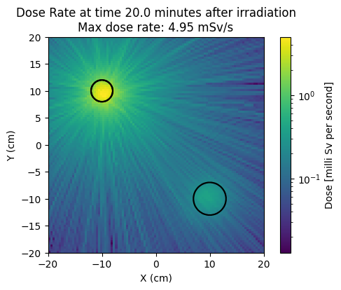
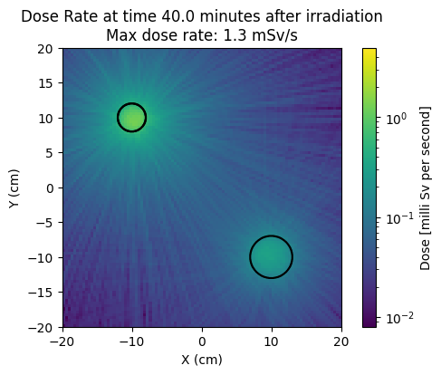
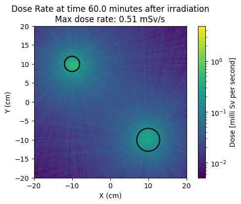
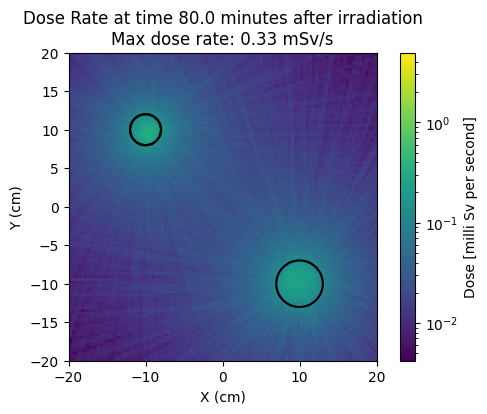
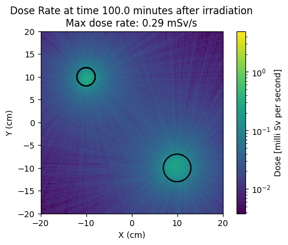
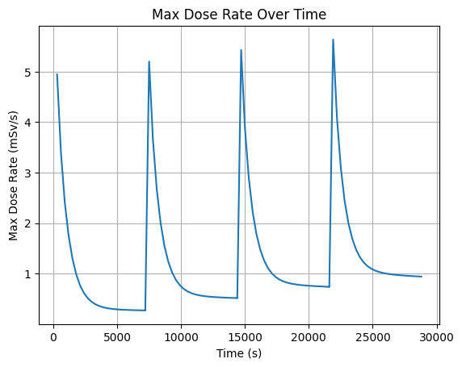
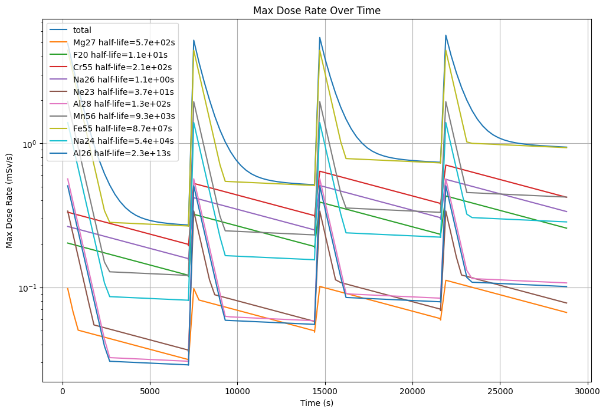

Shutdown dose rate D1S method#
This script simulates D1S method of shut down dose rate on a simple CSG model with one aluminum sphere and one iron sphere.
More details on D1S method in the OpenMC documentation https://docs.openmc.org/en/stable/usersguide/decay_sources.html#direct-1-step-d1s-calculations
import math
from pathlib import Path
import openmc
import numpy as np
import matplotlib.pyplot as plt
from matplotlib.colors import LogNorm
from openmc.deplete import d1s
from openmc.data.data import half_life
# Setting the cross section path to the correct location in the docker image.
# If you are running this outside the docker image you will have to change this path to your local cross section path.
openmc.config['cross_sections'] = Path.home() / 'nuclear_data' / 'cross_sections.xml'
# the chain file was downloaded with
# pip install openmc_data
# download_endf_chain -r b8.0
openmc.config['chain_file'] = Path.home() / 'nuclear_data' / 'chain-endf-b8.0.xml'
Make the materials
Note that they need the volume setting but don’t need to be made depletable
# We make a iron material which should produce a few activation products
mat_iron = openmc.Material()
mat_iron.add_nuclide("Al27", 1.0)
mat_iron.set_density("g/cm3", 8.0)
mat_iron.volume = 2* (4/3) * math.pi**3
# We make a Al material which should produce a few different activation products
mat_aluminum = openmc.Material()
mat_aluminum.add_nuclide("Fe56", 1.0)
mat_aluminum.set_density("g/cm3", 2.7)
mat_aluminum.volume = 3* (4/3) * math.pi**3
Now we make a simple geometry, a cube with two sphere inside.
The sphere have different materials and the cube is the edge of the simulation space.
sphere_surf_1 = openmc.Sphere(r=2, y0=10, x0=-10)
sphere_region_1 = -sphere_surf_1
sphere_cell_1 = openmc.Cell(region=sphere_region_1, fill=mat_iron)
sphere_surf_2 = openmc.Sphere(r=3, y0=-10, x0=10)
sphere_region_2 = -sphere_surf_2
sphere_cell_2 = openmc.Cell(region=sphere_region_2, fill=mat_aluminum)
xplane_surf_1 = openmc.XPlane(x0=-20, boundary_type='vacuum')
xplane_surf_2 = openmc.XPlane(x0=20, boundary_type='vacuum')
yplane_surf_1 = openmc.YPlane(y0=-20, boundary_type='vacuum')
yplane_surf_2 = openmc.YPlane(y0=20, boundary_type='vacuum')
zplane_surf_1 = openmc.ZPlane(z0=-20, boundary_type='vacuum')
zplane_surf_2 = openmc.ZPlane(z0=20, boundary_type='vacuum')
sphere_region_3 = +xplane_surf_1 & -xplane_surf_2 & +yplane_surf_1 & -yplane_surf_2 & +zplane_surf_1 & -zplane_surf_2 & +sphere_surf_1 & +sphere_surf_2 # void space
sphere_cell_3 = openmc.Cell(region=sphere_region_3)
my_geometry = openmc.Geometry([sphere_cell_1, sphere_cell_2, sphere_cell_3])
my_materials = openmc.Materials([mat_iron, mat_aluminum])
Next we make a minimal source term.
A 14MeV neutron source that activates material, located in the center of the geometry
my_source = openmc.IndependentSource()
my_source.space = openmc.stats.Point((0, 0, 0))
my_source.angle = openmc.stats.Isotropic()
my_source.energy = openmc.stats.Discrete([14.06e6], [1])
my_source.particle = "neutron"
Then we make the simulation settings, note that photon_transport is enabled and a D1S specific setting use_decay_photons is used
# settings for the neutron simulation with decay photons
settings = openmc.Settings()
settings.run_mode = "fixed source"
settings.particles = 1000000
settings.batches = 10
settings.source = my_source
settings.photon_transport = True
# D1S specific setting
settings.use_decay_photons = True
We now make the photon dose tally which uses a regular mesh so that we can make a dose map
# creates a regular mesh that surrounds the geometry for the tally
mesh = openmc.RegularMesh().from_domain(
my_geometry,
dimension=[100, 100, 1],
# 100 voxels in x and y axis directions and 1 voxel in z as we want a xy plot
)
# adding a dose tally on a regular mesh
# AP, PA, LLAT, RLAT, ROT, ISO are ICRP incident dose field directions, AP is front facing
energies, pSv_cm2 = openmc.data.dose_coefficients(particle="photon", geometry="AP")
dose_filter = openmc.EnergyFunctionFilter(
energies, pSv_cm2, interpolation="cubic" # interpolation method recommended by ICRP
)
particle_filter = openmc.ParticleFilter(["photon"])
mesh_filter = openmc.MeshFilter(mesh)
dose_tally = openmc.Tally()
dose_tally.filters = [particle_filter, mesh_filter, dose_filter]
dose_tally.scores = ["flux"]
dose_tally.name = "photon_dose_on_mesh"
tallies = openmc.Tallies([dose_tally])
Now we make the model and importantly for D1S we prepare the tallies
this run runs the neutron and decay photon steps
model = openmc.Model(my_geometry, my_materials, settings, tallies)
# this adds ParentNuclideFilter to each tally, which the D1S method requires
d1s.prepare_tallies(model=model)
output_path = model.run()
%%%%%%%%%%%%%%%
%%%%%%%%%%%%%%%%%%%%%%%%
%%%%%%%%%%%%%%%%%%%%%%%%%%%%%%
%%%%%%%%%%%%%%%%%%%%%%%%%%%%%%%%%%
%%%%%%%%%%%%%%%%%%%%%%%%%%%%%%%%%%%%%%
%%%%%%%%%%%%%%%%%%%%%%%%%%%%%%%%%%%%%%%%
%%%%%%%%%%%%%%%%%%%%%%%%
%%%%%%%%%%%%%%%%%%%%%%%%
############### %%%%%%%%%%%%%%%%%%%%%%%%
################## %%%%%%%%%%%%%%%%%%%%%%%
################### %%%%%%%%%%%%%%%%%%%%%%%
#################### %%%%%%%%%%%%%%%%%%%%%%
##################### %%%%%%%%%%%%%%%%%%%%%
###################### %%%%%%%%%%%%%%%%%%%%
####################### %%%%%%%%%%%%%%%%%%
####################### %%%%%%%%%%%%%%%%%
###################### %%%%%%%%%%%%%%%%%
#################### %%%%%%%%%%%%%%%%%
################# %%%%%%%%%%%%%%%%%
############### %%%%%%%%%%%%%%%%
############ %%%%%%%%%%%%%%%
######## %%%%%%%%%%%%%%
%%%%%%%%%%%
| The OpenMC Monte Carlo Code
Copyright | 2011-2025 MIT, UChicago Argonne LLC, and contributors
License | https://docs.openmc.org/en/latest/license.html
Version | 0.15.3-dev144
Commit Hash | 14ab4d3b6f3d77b73e8bb480782bbe1bdd56483d
Date/Time | 2025-06-06 15:54:14
OpenMP Threads | 16
Reading model XML file 'model.xml' ...
Reading chain file: /home/jon/nuclear_data/chain-endf-b8.0.xml...
Reading cross sections XML file...
Reading Al27 from /home/jon/nuclear_data/neutron/Al27.h5
Reading Al from /home/jon/nuclear_data/photon/Al.h5
Reading Fe56 from /home/jon/nuclear_data/neutron/Fe56.h5
Reading Fe from /home/jon/nuclear_data/photon/Fe.h5
Minimum neutron data temperature: 294.0 K
Maximum neutron data temperature: 294.0 K
Preparing distributed cell instances...
Writing summary.h5 file...
Maximum neutron transport energy: 150000000.0 eV for Al27
===============> FIXED SOURCE TRANSPORT SIMULATION <===============
Simulating batch 1
Simulating batch 2
Simulating batch 3
Simulating batch 4
Simulating batch 5
Simulating batch 6
Simulating batch 7
Simulating batch 8
Simulating batch 9
Simulating batch 10
Creating state point statepoint.10.h5...
=======================> TIMING STATISTICS <=======================
Total time for initialization = 9.9816e-01 seconds
Reading cross sections = 6.9913e-01 seconds
Total time in simulation = 4.4366e+00 seconds
Time in transport only = 4.3658e+00 seconds
Time in active batches = 4.4366e+00 seconds
Time accumulating tallies = 2.8908e-02 seconds
Time writing statepoints = 3.9402e-02 seconds
Total time for finalization = 1.4916e-01 seconds
Total time elapsed = 5.5883e+00 seconds
Calculation Rate (active) = 2.25399e+06 particles/second
============================> RESULTS <============================
Leakage Fraction = 1.00073 +/- 0.00001
Now we read in the tally
# Get tally from statepoint
with openmc.StatePoint(output_path) as sp:
dose_tally_from_sp = sp.get_tally(name='photon_dose_on_mesh')
This section defines the neutron pulse schedule timesteps to take dose tally measurements.
Also some D1S specific steps to get the time correction factors that we use to modify the tally result later.
timesteps_and_source_rates = [
(1, 1e18), # 1 second
(60*20, 0), # 20 minutes
(60*20, 0), # 40 minutes
(60*20, 0), # 60 minutes
(60*20, 0), # 80 minutes
(60*20, 0), # 100 minutes
]
timesteps = [item[0] for item in timesteps_and_source_rates]
source_rates = [item[1] for item in timesteps_and_source_rates]
# this gets all the unstable nuclides that can be produced during D1S
radionuclides = d1s.get_radionuclides(model)
# Compute time correction factors based on irradiation schedule
time_factors = d1s.time_correction_factors(
nuclides=radionuclides,
timesteps=timesteps,
source_rates=source_rates,
timestep_units = 's'
)
We then plot the tally for each time in the timesteps of interest
note the use of apply_time_correction which is a D1S specific command
for i_cool in range(1, len(timesteps)): # missing the first timestep as it is the irradiation step
# Apply time correction factors
# this includes the source_rates which are in units of neutrons per second
# dose_tally_from_sp is in units of pSv-cm3/source neutron
# corrected tally is now in units of pSv-cm3/second
corrected_tally = d1s.apply_time_correction(
tally=dose_tally_from_sp,
time_correction_factors=time_factors,
index=i_cool,
sum_nuclides=True
)
# multiplication by pico_to_milli converts from (pico) pSv to (milli) mSv
pico_to_milli = 1e-9
# divided by mesh element volume converts from mSv-cm3 to mSv
volume_normalization = mesh.volumes[0][0][0]
# this section simply gets the maximum value of the mean tally across all time steps
# and uses this to set the max value of the color bar in the plots
if i_cool == 1:
max_tally_value = max(corrected_tally.mean).flatten()
scaled_max_tally_value = (max_tally_value * pico_to_milli) / volume_normalization
# get a slice of mean values on the xy basis mid z axis
corrected_tally_mean = corrected_tally.get_reshaped_data(value='mean', expand_dims=True).squeeze()
# create a plot of the mean flux values
scaled_corrected_tally_mean = (corrected_tally_mean * pico_to_milli) / volume_normalization
fig, ax1 = plt.subplots(figsize=(6, 4))
plot_1 = ax1.imshow(
X=scaled_corrected_tally_mean.T,
origin="lower",
extent=mesh.bounding_box.extent['xy'],
norm=LogNorm(vmax=scaled_max_tally_value)
)
ax2 = my_geometry.plot(
outline='only',
extent=my_geometry.bounding_box.extent['xy'],
axes=ax1, # Use the same axis as ax1
pixels=10_000_00, #avoids rounded corners on outline
)
time_in_mins = round(sum(timesteps[1:i_cool+1])/(60),2)
max_dose_in_timestep = round(max(scaled_corrected_tally_mean.flatten()), 2)
ax2.set_title(f"Dose Rate at time {time_in_mins} minutes after irradiation\nMax dose rate: {max_dose_in_timestep} mSv/s")
ax2.set_xlim(ax1.get_xlim())
ax2.set_ylim(ax1.get_ylim())
ax2.set_aspect(ax1.get_aspect()) # Match aspect ratio
ax2.set_xlabel("X (cm)")
ax2.set_ylabel("Y (cm)")
cbar = plt.colorbar(plot_1, ax=ax1)
cbar.set_label("Dose [milli Sv per second]") # Label for the color bar
plt.show()
plt.close()





One of the really nice aspects of the D1S workflow is the dose values are computed as a post process.
This means we don’t need to resimulate if we want to change the pulse scheduel
# Define one irradiation step and one cooling step
irradiation_step = (1, 1e18)
cooling_step = (60 * 5, 0) # 5 mins of cooling with no source rate
# Build one cycle: irradiation + N cooling steps
cooling_steps = [cooling_step] * 24
pulse_cycle = [irradiation_step] + cooling_steps
# Repeat the cycle 5 times
timesteps_and_source_rates = pulse_cycle * 4
timesteps = [item[0] for item in timesteps_and_source_rates]
source_rates = [item[1] for item in timesteps_and_source_rates]
# this gets all the unstable nuclides that can be produced during D1S
radionuclides = d1s.get_radionuclides(model)
# Compute time correction factors based on irradiation schedule
time_factors = d1s.time_correction_factors(
nuclides=radionuclides,
timesteps=timesteps,
source_rates=source_rates,
timestep_units = 's'
)
scaled_max_tally_values = []
for i_cool in range(1, len(timesteps)): # missing the first timestep as it is the irradiation step
# Apply time correction factors
# this includes the source_rates which are in units of neutrons per second
# dose_tally_from_sp is in units of pSv-cm3/source neutron
# corrected tally is now in units of pSv-cm3/second
corrected_tally = d1s.apply_time_correction(
tally=dose_tally_from_sp,
time_correction_factors=time_factors,
index=i_cool,
sum_nuclides=True
)
# this section simply gets the maximum value of the mean tally across all time steps
scaled_max_tally_values.append((max(corrected_tally.mean).flatten()* pico_to_milli) / volume_normalization)
This plots the max dose rate at each time step for the 5 pulse decay irradiation.
The plot has the shut down dose just after the irradiation and for a few times after each shot to show how the dose decreases.
This plot shows shows a sharp drop in the dose rate after the shot, that is caused by some unstable isotopes decaying quickly are the irradiation stops
After 5000 seconds the dose rate starts to level out, this is due to longer lived unstable isotopes that have now become the dominant contributor to the dose.
We also notice that each shot causes the total dose rate to steadily climb. This is due to the build up of these longer lived unstable isotopes that have not had time to completely decay away before the next pulse of neutrons arrives.
plt.plot(np.cumsum(timesteps[1:]), scaled_max_tally_values)
plt.xlabel("Time (s)")
plt.ylabel("Max Dose Rate (mSv/s)")
plt.title("Max Dose Rate Over Time")
plt.grid()
plt.show()

corrected_tally = d1s.apply_time_correction(
tally=dose_tally_from_sp,
time_correction_factors=time_factors,
index=i_cool,
sum_nuclides=False
)
# one can get the nuclides from ealier in the code
# In this case we get the nuclides from the tally.
# This allows us to full detach the post processing from the simulation script.
# This is useful if you want to post process a statepoint file and not have the script that made the simulation.
parent_nuclide_filter = corrected_tally.find_filter(openmc.ParentNuclideFilter)
parent_nuclides = parent_nuclide_filter.bins
scaled_max_tally_values_per_nuclide = {str(nuclide): [] for nuclide in parent_nuclides}
for i_cool in range(1, len(timesteps)): # missing the first timestep as it is the irradiation step
# Apply time correction factors
# this includes the source_rates which are in units of neutrons per second
# dose_tally_from_sp is in units of pSv-cm3/source neutron
# corrected tally is now in units of pSv-cm3/second
corrected_tally = d1s.apply_time_correction(
tally=dose_tally_from_sp,
time_correction_factors=time_factors,
index=i_cool,
sum_nuclides=False # to get the individual nuclides
)
mean_values_per_nuclide = corrected_tally.mean.squeeze().reshape(len(parent_nuclides), -1)
for i_nuclide, nuclide in enumerate(parent_nuclides):
# this section simply gets the maximum value of the mean tally across all time steps
max_value_for_nuclide = (max(mean_values_per_nuclide[i_nuclide]).flatten()* pico_to_milli) / volume_normalization
scaled_max_tally_values_per_nuclide[str(nuclide)].append(float(max_value_for_nuclide[0]))
Plotting the dose contribution of the individual isotopes allows us to see that the build up of the longer lived isotopes and identify the main driver for the more long lived dose contribution.
plt.figure(figsize=(12, 8))
plt.plot(np.cumsum(timesteps[1:]), scaled_max_tally_values, label='total')
for i, nuclide in enumerate(parent_nuclides):
nuclide_str = str(nuclide)
if sum(scaled_max_tally_values_per_nuclide[str(nuclide)]) > 2.0:
plt.plot(np.cumsum(timesteps[1:]), scaled_max_tally_values_per_nuclide[nuclide_str], label=f"{nuclide_str} half-life={half_life(nuclide_str):.1e}s")
plt.legend()
plt.xlabel("Time (s)")
plt.yscale('log')
# plt.xscale('log')
plt.ylabel("Max Dose Rate (mSv/s)")
plt.title("Max Dose Rate Over Time")
plt.grid()
plt.show()

A good place to start when reading further on the topic of D1S is the original paper https://www.sciencedirect.com/science/article/abs/pii/S0920379601001880
As of yet the D1S publication is not live (May 2025) but in the mean time I would recommend this paper on the validation of the R2S method with OpenMC https://iopscience.iop.org/article/10.1088/1741-4326/ad32dd